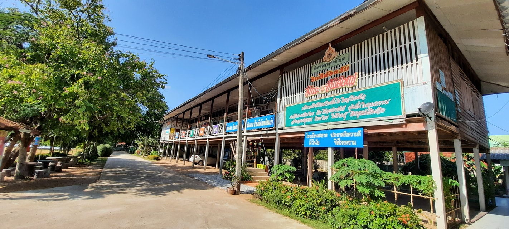

ประวัติโรงเรียน
โรงเรียนบ้านขั้นไดใหญ่โนนค้อ เป็นโรงเรียนในสังกัดสำนักงานเขตพื้นที่การศึกษาประถมศึกษายโสธร เขต 1 สำนักงานคณะกรรมการการศึกษาขั้นพื้นฐาน กระทรวงศึกษาธิการ ตั้งอยู่หมู่ที่ 5 บ้านขั้นไดใหญ่ ตำบลขั้นไดใหญ่ อำเภอเมือง จังหวัดยโสธร ก่อตั้งเมื่อ พ.ศ. 2466 มีพื้นที่ทั้งหมด 6 ไร่ 12 ตารางวา เป็นที่ดินของประชาชนบริจาค ผู้บริหารคนแรก คือ นายจูม สุวรรณราช คนปัจจุบันชื่อ นายสุทธิรักษ์ จันทุม ปัจจุบันมีครูทั้งหมด 4 คน ผู้บริหาร 1 คน มีลูกจ้างชั่วคราว 2 คน ปฏิบัติหน้าที่เจ้าหน้าธุรการและนักการภารโรง มีนักเรียนทั้งหมด 49 คน ชาย 26 คน หญิง 23 คน
 รหัสโรงเรียน 10 หลัก : 1035430056รหัส Smis 8 หลัก : 35010003
รหัส Obec 6 หลัก : 430056
ชื่อสถานศึกษา(ไทย) : บ้านขั้นไดใหญ่โนนค้อ
ชื่อสถานศึกษา(อังกฤษ) : khandaiyainonko school
ที่อยู่ : หมู่ที่ 5 บ้านบ้านขั้น
ไดใหญ่ ตำบล : ขั้นไดใหญ่
อำเภอ : เมืองยโสธร
จังหวัด/span> ยโสธร รหัสไปรษณีย์ : 35000
โทรศัพท์ : 0-4573-7421
ระดับที่เปิดสอน : อนุบาล-ประถมศึกษา
เว็บไซต์ : http://?http://l.obec.go
องค์กรปกครองส่วนท้องถิ่น : ขั้นไดใหญ่
ระยะทางจากโรงเรียน : 18 กม.
ระยะทางจากโรงเรียน ถึง อำเภอ : 19 กม.